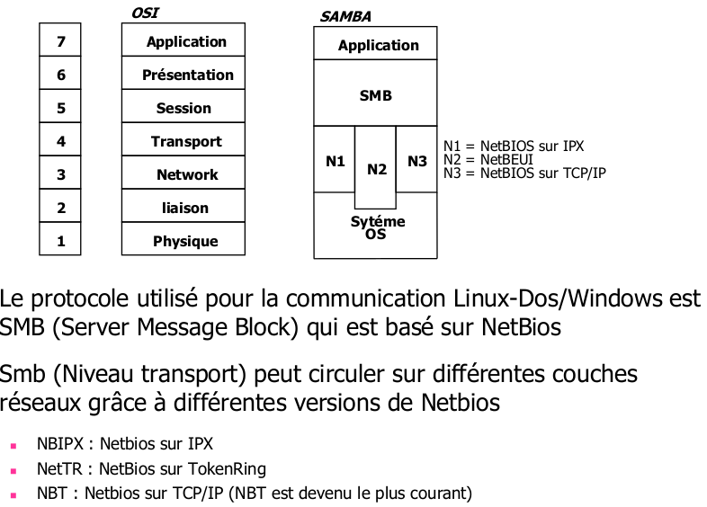

Plan
- Introduction
- Qu'est-ce que l'Active Directory ?
- Notion de domaine et de contrôleur de domaine
- Les types d'objets principaux
- Présentation de Samba
- Fonctionnement des réseaux Microsoft
- Netbios fonctionne sur le principe de la diffusion
INTRODUCTION :
La suite de logiciels Samba est une ré-implémentation en logiciels libres des protocoles réseau clients et serveurs de Microsoft. La notion de liberté est particulièrement chère aux développeurs du projet, car il a été le premier projet d'envergure à adopter cette licence en passant Samba 3.2 sous GPL v3 dès 2007. Jusqu'ici, Samba 3 était capable de couvrir l'ensemble des fonctionnalités d'un réseau de type NT4 avec un certain nombre d'améliorations, comme la possibilité d'utiliser OpenLDAP comme backend de stockage ou encore un fonctionnement en cluster, bien que ces fonctionnalités soient relativement complexes à mettre en œuvre. Samba 3 gère notamment l'authentification en mode serveur maître/esclave (PDC/BDC pour Primary Domain Controler et Backup Domain Controler) et la fourniture des services de partage de fichiers et d'impression.
La compatibilité avec l'Active Directory de Microsoft est cependant limitée à la possibilité de joindre un domaine - au sens domaine de sécurité - et il devenait de plus en plus pressant de rattraper le retard accumulé. En effet, Active Directory est sorti en 2000, Samba 4 a été démarré en 2003 et bien que la version finale commence à pointer le bout de son nez, il aura fallu presque dix ans pour achever le travail titanesque que représente la ré-implémentation de tous les protocoles en jeu.
QU'EST-CE QUE L'ACTIVE DIRECTORY
L'Active Directory consiste en une intégration particulièrement poussée d'un certain nombre de protocoles plus ou moins standardisés dans le but de fournir des services d'authentification, de configuration et d'administration (déploiement de logiciels et de configuration) centralisés. Fonctionnellement, c'est une évolution de ce qu'il était déjà possible de faire auparavant, car les principaux objets stockés dans l'Active Directory sont des utilisateurs, des groupes et des ordinateurs. Techniquement, l'évolution apportée par la migration vers de nouveaux protocoles, permet de partitionner les ressources de manière sécurisée, logique, le tout avec un passage à l'échelle plus important, car stocké dans une base de données répliquée, la NTDS pour NT Directory Services.
NOTION DE DOMAINE ET DE CONTRôLEUR DE DOMAINE
Chaque serveur hébergeant l'Active Directory ou une partition de celui-ci est appelé un contrôleur de domaine ou DC. Le nom de domaine DNS est par défaut utilisé pour le nommage du domaine Active Directory. Par exemple, si votre domaine DNS interne est reseau.local, alors l'arborescence LDAP de l'Active Directory sera DC=reseau,DC=local. Tout comme le DNS, il est possible de créer un ou plusieurs domaine(s) et sous-domaine(s) au sein de l'AD. L'ensemble des domaines et sous-domaines regroupés au sein d'une même forêt partagent le même schéma Active Directory (et donc LDAP), ainsi que des relations d'approbation entre les domaines. Par défaut, la création d'un domaine ou d'un sous-domaine entraîne la création d'une relation d'approbation d'authentification transitive et bidirectionnelle.
La fonctionnalité « Catalogue Global » au sein d'un contrôleur de domaine permet à celui-ci de contenir une vue partielle des objets des autres domaines, afin de permettre la recherche d'objets situés dans d'autres domaines plus rapidement sans nécessiter une réplication complète du contenu des différents domaines. Contrairement à un réseau NT4/Samba3, chaque contrôleur de domaine est un contrôleur de domaine maître, il n'y a donc plus de notion de contrôleur de domaine secondaire. A noter qu'avec Windows 2008 Server, Microsoft a introduit la notion de contrôleur de domaine en lecture seule. Il assure l'ensemble des fonctions permises par un contrôleur de domaine, à l'exception du fait qu'il est exclu de la réplication multi-maître et ne contient, comme son nom l'indique, qu'une copie en lecture du domaine. Ce type de contrôleur de domaine est en cours de prise en charge par l'équipe Samba.Cependant, afin d'assurer l'unicité de certaines informations au sein du domaine ou de la forêt, certaines fonctionnalités sont uniques :
- Le rôle d'émulateur de Contrôleur de Domaine Principal, unique au sein d'un domaine, assure la compatibilité descendante pour l'authentification de type NT4.
- Le rôle Maître d'IDentifiants Relatifs, unique au sein d'un domaine, assure l'unicité des identifiants alloués aux autres contrôleurs de domaine (l'équivalent des UID/GID Unix). « Relatif » vient du fait que chaque objet est identifié par un identifiant unique (le SID), qui est la concaténation de l'identifiant de domaine et du RID de l'objet.
- Le rôle Maître d'Infrastructure, assure la consistance des SID/GUID au sein des objets du domaine. En pratique, il gère surtout la consistance de la résolution de nom des objets dans les groupes de l'AD et le déplacement des objets entre domaines.
- Le rôle Maître de Schéma, unique au sein d'une forêt. Gère la consistance et la réplication du schéma au sein de la forêt.
- Le rôle Maître de Nommage de Domaine, gère l'unicité des noms de domaines AD lors de l'ajout ou la suppression de ceux-ci.
LES TYPES D'OBJETS PRINCIPAUX
Les objets de l'Active Directory sont stockés dans un annuaire compatible LDAP. Il est donc interrogeable naturellement via les ports LDAP (389/TCP), LDAPS (636/TCP), ainsi qu'un port spécial, le port catalogue global (3268/TCP). Ce port permet de requêter en LDAP un contrôleur de domaine pour des objets se situant sur l'ensemble de la forêt. L'Active Directory ayant pour but premier la gestion de l'authentification, des autorisations et du contrôle d'accès, les types d'objets principaux sont donc tout à fait classiques dans ce type de configuration. On va donc retrouver :
- Les unités d'organisation, qui sont des conteneurs permettant de hiérarchiser les autres objets que l'on va retrouver. Elles sont utilisées pour classer structurellement les objets en fonction de leur rôle au sein d'une organisation (services, sites, etc.), soit pour affecter des droits. Bien entendu, ces deux rôles principaux ne sont pas mutuellement exclusifs.
- Les comptes utilisateurs.
- Les comptes d'ordinateur, permettant tout comme au niveau utilisateur d'auditer et d'authentifier l'accès aux ressources du domaine au niveau ordinateur.
- Les groupes. Il existe trois étendues de groupes : locale, globale et universelle, permettant d'affecter des autorisations respectivement pour uniquement le domaine local, tout domaine ou sous-domaine, ou toute la forêt. Deux types de groupes existent, les groupes de sécurité pour l'affectation d'autorisations et les groupes de distribution, qui servent surtout pour les applications de messagerie. Notez que contrairement aux groupes POSIX, l'Active Directory prend en charge les groupes incluant d'autres groupes.
PRÉSENTATION DE SAMBA
Le projet SAMBA est une application réseau permettant des échanges entre un serveur Linux et des stations sous :
- partage de fichiers et de répertoires
- partage d'imprimantes
- respect des comptes utilisateurs
- gestion des permissions d'accès.
FONCTIONNEMENT DES RÉSEAUX MICROSOFT
- Pour comprendre le fonctionnement de samba, il faut connaître les bases
des réseaux Windows
- NetBIOS est à la base de tout le fonctionnement d'un réseau Microsoft.
- Nommage des machines
- Gestion et nommage des groupes de travail ou des domaines.
- Identification d'un serveur comme contrôleur de domaine ou comme
simple station
- Voisinage réseau.
- Il a été fortement critiqué pour la charge induite sur les réseaux, mais
c'est aussi un système puissant et fonctionnel dès lors qu'il est paramétré
avec soin sur un système stable et bien protégé.
- NetBIOS, c'est le système de nommage des réseaux SMB (réseaux MS).
On peut le comparer grossièrement à DNS pour le nommage internet.
- Pour identifier les éléments des réseaux Microsoft on utilise
NetBIOS. Sans NetBIOS, pas de partage de fichiers et
d'imprimantes, pas de Samba.
- Sous Windows, il faut avoir activé soit le client pour les réseaux
Microsoft (qui permet d'inscrire la station dans un domaine), soit
le partage de fichiers et d'imprimantes (qui permet de partager
des ressources au sein d'un groupe de travail).
- Ne pas installer ces services, revient à rendre la machine sourde
et muette sur un réseau SMB TCP/IP.
- Sur une machine Unix, il faut installer Samba... avec Samba on
installe donc les démons SMBD et NMBD.
LA GESTION DES NOM NETBIOS
- Permet d’identifier les éléments du réseau (et donc permetle partage de fichiers, imprimantes, ...)
- Equivalent au DNS pour Internet
- Ce n’est pas un protocole au sens OSI, c’est une méthode pour nommer des machines et une interface logicielle
- Tous les réseaux Microsoft sont basés dessus
- Permet de nommer des machines, des groupes de travail,des domaines, d’identifier des serveurs comme contrôleur de domaine, de faire fonctionner le voisinage réseau
- Un nom Netbios a 15 caractères maximum +1
- Ce nom peut être le nom de la machine Windows (accessible via le voisinage réseau)
- Ou le nom du groupe de travail
- Le 16ème caractère indique le type du nom et aussi la fonction de la machine (standard ou contrôleur) (commande nbtstat –a @iplocale)
NETBIOS FONCTIONNE SUR LE PRINCIPE DE LA DIFFUSION
- Le voisinage réseau, c'est l'ensemble des machines faisant tourner NetBIOS dans un même réseau IP
- Ne pas voir une machine dans le voisinage réseau,
signifie trop souvent qu'elle est mal paramétrée.
- Pour rejoindre un domaine, une machine en fait la
demande par diffusion
- De même pour la recherche d’un contrôleur de
domaine

PROTOCOLE SMB UTILISE LE PORT :
- 137 en UDP (service de nom Netbios)
- 138 en UDP (service datagram Netbios)
- 139 en TCP (service de session de Netbios)
OUVERTURE D'UNE SESSION SMB
- SMB fonctionne en architecture client / serveur. En clair, le client (esclave) demande et le serveur (maître) renvoi une réponse. Il
est important de savoir qu'une machine peut-être, à la fois,
cliente et serveur.